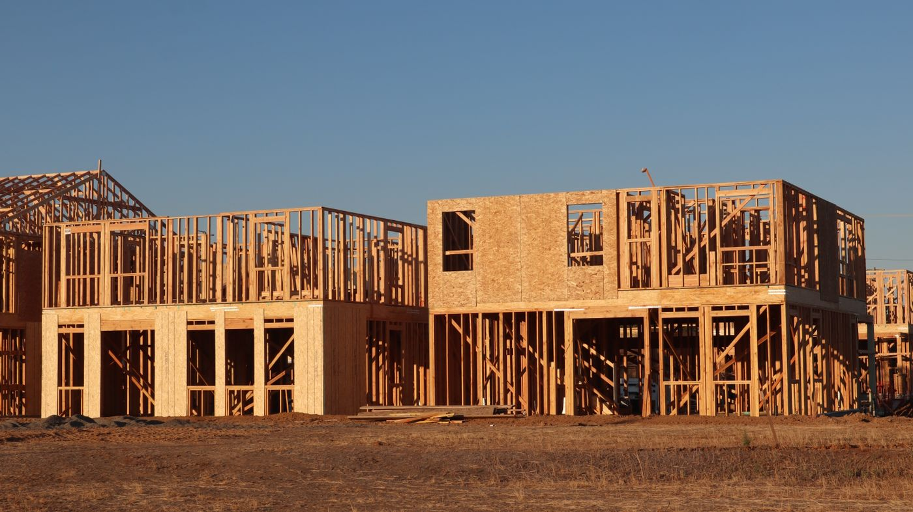

Quick answer: A builder quote in Sydney is a written cost document for a construction project, presented as either a fixed-price or cost-plus arrangement. A properly specified fixed-price quote should cover labour and materials, a provisional sum schedule, a prime cost item schedule with allowances for owner-selected fixtures, and a clear schedule of exclusions. Construction-only quotes for a custom home in Sydney in 2026 run $2,800–$5,500 per m² depending on specification and site. Always get at least three quotes on identical documentation — comparing quotes that carry different inclusions is not a comparison at all.
Show me the money. It is a reasonable demand once you have spent three months choosing kitchen profiles, front door hardware, and which shade of off-white you actually mean. The industry’s version is the builder quote — and the industry has a talent for making it harder to read than it ought to be. “Fixed price” contracts that are not entirely fixed. Quoted totals that are $150,000 apart for what looks like the same house. Exclusion schedules buried at page fourteen.
[Right. Straight face now.] Here is what a Sydney builder quote should contain, how fixed-price and cost-plus contracts actually differ, why two quotes for the same project can be a significant distance apart, and the questions to ask before you sign anything.
- What a builder quote is (and what it is not)
- Fixed price vs cost-plus — the real difference
- What a builder quote must include
- How many quotes to get
- Why quotes differ so much between Sydney builders
- The cost-per-m² trap
- Provisional sums and PC items — the fine print
- After accepting a quote: what happens next
- Red flags in any Sydney builder quote
- When not to focus on the quote alone
- Six questions to ask when comparing quotes
- FAQ
What a Builder Quote Is (and What It Is Not)
A builder quote is a formal written document stating the price at which a licensed builder will complete a described scope of work. It is not a ballpark figure, a verbal estimate at a site meeting, or a number sent over by text.
In NSW, for residential building contracts over $20,000, a formal written contract is legally required under the Home Building Act 1989. The quote or tender precedes that contract — it is the document on which you decide whether to proceed, and which forms the basis of the contract price once signed.
Two formats exist. A fixed-price quote states a total dollar amount for the agreed scope of work, subject to approved variations. A cost-plus quote commits to a methodology rather than a figure: the builder is paid for actual labour and materials, plus an agreed percentage or fixed fee for overhead and profit. Most Sydney homeowners and most custom home builders work on a fixed-price basis. The term is slightly misleading, for reasons that become clear once you understand provisional sums and PC items.
A quote is also not an estimate. These terms are used interchangeably in the industry, but they carry different implications. A quote is a firm offer for a stated scope; an estimate is an informal view of likely cost with no legal obligation attached. If you are unclear which you have received, ask directly before treating the number as reliable.
Fixed Price vs Cost-Plus — the Real Difference
A fixed-price building contract means the total is agreed in advance. Within that total, however, are two categories of items that are not fixed at all: provisional sums and prime cost items. More on these in a moment.
Cost-plus contracts are less common in residential construction but worth understanding. Under cost-plus, you see every invoice — materials, labour, subcontractor costs all pass through to you at cost, with the builder adding a margin (typically 15–20% in Sydney) on top. The appeal is transparency: you know exactly where the money is going. The risk is that there is no ceiling. If materials prices rise or work takes longer than planned, the final cost moves accordingly.
For renovation projects where the full scope is genuinely uncertain until demolition is complete, cost-plus can be the more honest structure. For a new build with detailed documentation — full architectural drawings, engineer’s reports, a confirmed specification list — fixed price is generally more appropriate. See our guide on building a new home in Sydney for how this plays out across the full build process.
Photo via Pexels
What a Builder Quote Must Include
A properly specified Sydney builder quote should contain the following components. If any of these are missing, the document is incomplete and the total cannot be used for reliable comparison.
Labour and materials for all trades within the builder’s scope: structural, carpentry, concrete, waterproofing, roofing, glazing, and any specialist subcontractors. This should be broken down by trade or section, not presented as a single lump sum.
A provisional sum (PS) schedule listing every item where cost cannot be fixed in advance — demolition of underground structures that are unknown until excavation, earthworks on a site with unconfirmed soil classification, or connection to services where the authority hasn’t confirmed requirements. Provisional sums are estimates. The actual cost replaces the estimate once the work is done, and the contract price adjusts accordingly.
A prime cost (PC) item schedule with explicit allowances for owner-selected fixtures and fittings: tapware, kitchen appliances, tiles, door hardware, light fittings. The builder includes a dollar allowance per item; if you select something that costs more than the allowance, you pay the difference as a variation. The size and realism of those allowances matter considerably.
A schedule of exclusions. This is the section most homeowners skip. Standard exclusions in Sydney builder quotes typically include: demolition and hazardous materials removal, council application fees and contributions, landscaping and irrigation, retaining walls above a specified height, driveway and paving beyond the footprint, and connection fees for utilities. If exclusions are not listed, they have not been agreed — and that creates problems when the council contribution invoice arrives.
A validity period. Standard in Sydney is 30–60 days, after which material and labour cost movements may require the quote to be reissued.
How Many Quotes to Get
Three is the standard advice. Three is also correct as a minimum, provided a specific condition is met.
A single quote gives you a number and no context for whether it is reasonable. Two quotes give you a comparison but not enough spread to identify whether either is an outlier. Three quotes, on identical documentation, give you a defensible view of market pricing for your specific scope.
Beyond three, the returns diminish quickly. Inviting five builders to quote on a project you are only considering pursuing with two of them is an exercise in paperwork, not decision-making.
The condition that matters more than the number: every builder must be quoting on the same plans, the same specification document, and the same PC item allowances. A quote for a home with $15,000 in total PC allowances is not comparable to a quote with $55,000 in PC allowances for the same house. The totals will be different. The reason will not be obvious without reading both PC schedules in full. If you are early in the process and want a head start on choosing the right builder before documentation is finalised, our guide to how to choose a custom home builder covers the selection criteria that matter most.
Why Quotes Differ So Much Between Sydney Builders

Photo via Pexels
A $150,000 gap between two quotes on the same project is not unusual in Sydney. It is not evidence that one builder is gouging and the other is doing you a favour. It is almost always explained by one or more of the following.
Provisional sum assumptions. If one builder has estimated $10,000 for earthworks and another has estimated $28,000, and the site has a meaningful slope or unknown rock, the second builder’s figure is probably more accurate. The first quote looks cheaper on the total. It probably is not, once earthworks commence.
PC item allowances. “Supply and install a kitchen” means very different things at different price points. One builder has assumed a mid-market flat-pack supplier; another has priced a fully custom joinery package. Without a detailed specification document, both interpretations are technically valid within the scope of the quote. The difference shows up in the total — and in what your kitchen looks like at handover.
Labour and subcontractor relationships. Builders who have worked with the same subbies for years and pay reliably often receive better rates. Builders who are under commercial pressure and chasing work sometimes discount to win a contract, then manage the shortfall through variations during construction. The variation clause in the proposed contract is worth reading carefully for this reason.
Risk margin. An experienced builder pricing a project in a suburb they know well, with a council they have worked with before, will carry different risk allowances than a builder quoting blind on unfamiliar territory. A quote that seems unusually competitive from a builder who has never worked in your LGA deserves closer scrutiny of the provisional sum and exclusions schedules.
The Cost-per-m² Trap
Cost per square metre is a useful shorthand and a poor decision tool. The building industry presents it constantly; homeowners arrive at first meetings having done the calculation on a napkin. Both parties pretend it means more than it does.
The figure means nothing without knowing what is included in both the numerator (the quoted price) and the denominator (what counts as floor area). Covered outdoor living areas, garages, and voids are counted differently by different builders. A quote that includes the double garage in the m² calculation will show a lower cost-per-m² than one that excludes it — for the same physical house.
More fundamentally: a standard four-bedroom home and a four-bedroom home with a double-height void, a feature staircase, high-specification joinery, and a basement may both be 320m². Their cost-per-m² will be completely different numbers. Comparing them on that metric is comparing things that are not the same thing.
Use cost-per-m² as a rough sanity filter — a $1,400 per-m² quote for a high-specification custom home in Sydney in 2026 should prompt questions before it prompts excitement. As a comparison tool between specific quotes for the same project, it is not reliable. Look at the total, then interrogate what is inside it.
Provisional Sums and PC Items — the Fine Print in “Fixed Price”
This section is the one most guides on builder quotes skip. It explains why two homeowners can sign fixed-price contracts for similar homes and end up with final costs that are far apart.
A provisional sum (PS) is an estimated cost included in the contract for work where the final scope or price cannot be determined at the time of quoting — typically earthworks, demolition of structures not yet visible, connection to services, or rock excavation. The contract should specify whether each PS is a considered estimate based on the builder’s experience or a purely notional figure. A $5,000 PS for rock excavation on a site with visible outcropping is not a considered estimate. It is optimism.
A prime cost (PC) item is a fixed allowance for an owner-selected fitting or fixture. The builder includes $4,800 for bathroom tapware, for example. If you choose tapware that retails for $7,200, you pay the $2,400 difference as a variation. This is standard practice and inherently fair — the builder cannot fix a price for something you have not chosen yet.
The problem arises when PC allowances are set unrealistically low to make the total look competitive. A $120 allowance per light fitting and a $2,200 allowance for the entire master bathroom tapware set are signals. Ask any Sydney builder what the average PC overage is on their signed contracts. The honest answer tells you how carefully those allowances were set in the first place. Ask to see the PC schedule from a recently completed project of similar specification — what was allowed versus what was spent.
A useful rule: the sum of all provisional sums and PC items in a quote should not exceed 15–20% of the total contract price. Above that threshold, the contract has too much flexibility to be genuinely fixed price in practice.
After Accepting a Quote: What Happens Next
Photo via Pexels
Accepting a quote is not the same as signing a contract. The sequence that follows:
- The builder prepares a formal building contract — HIA (Housing Industry Association) or MBA (Master Builders Association) standard form contracts are commonly used in NSW. Read this document in full before signing. The variation clause, in particular, is worth understanding.
- Both parties sign. The contract records the agreed price, the payment schedule, the commencement date, the practical completion date, and the variation procedure.
- The builder lodges a construction certificate or CDC (complying development certificate) application, depending on the approval path. For projects already approved through a DA, this step follows from the consent conditions.
- Home building compensation (HBC) insurance is issued. For residential contracts over $20,000, NSW law requires the builder to hold this insurance before taking a deposit. The policy protects you if the builder becomes insolvent, dies, or disappears before completing the work. Ask for the certificate of insurance before paying anything.
- The deposit is paid and the build commences to programme.
On the deposit: under the Home Building Act 1989 in NSW, the deposit for a residential contract over $20,000 is capped at 10% of the contract price. Do not pay more than this, regardless of what a builder requests. You can verify the deposit cap and your rights on the NSW Planning Portal.
For more on how the build process flows from contract to handover, see our process overview.
Red Flags in Any Sydney Builder Quote
None of these are definitive — context exists for everything. But each one warrants a direct question before the contract is signed.
- No PC or PS schedule. A quote with a single line-item total and no breakdown is not a quote. It is a number. Numbers without context are not comparable with anything.
- PC allowances that seem low for the specification discussed. $1,800 for the entire kitchen appliance package in a 2026 custom Sydney home means either the builder intends a basic-market fit-out, or the quote will not survive contact with your actual selections.
- No exclusions schedule. Every quote has exclusions. If they are not listed in writing, they have not been agreed. Discovering post-contract that council contributions, demolition, and retaining walls are all excluded is an expensive surprise.
- Unusual pressure to sign within 48–72 hours. Standard quote validity is 30–60 days. A builder who creates urgency on a document of this size and commitment is applying a sales technique, not reporting a material cost emergency.
- No builder licence number on the document. Verify the number on the NSW Fair Trading register before proceeding. A builder who won’t provide their licence number is also providing a reference, of sorts.
- Verbal variation agreements. If a builder tells you variations will be handled informally during the build, decline. Every variation should be documented in writing with a price before work proceeds. Verbal agreements about scope changes are the most common source of builder-client disputes in NSW.
When Not to Focus on the Quote Alone
The cheapest quote is not always the right choice. This is repeated often enough that it sounds like a platitude. It is not. It is the finding of most people who have managed a building project.
A builder who is price-competitive but currently running six simultaneous projects, with a site supervisor rotating across all of them, is a different risk profile from a slightly more expensive builder who runs three concurrent builds and has built ten projects in your postcode. The quote captures price. It does not capture capacity, experience, or what happens when something goes wrong — as it does, on every project, at some point.
If the price difference between two builders you have researched carefully is within 10–15%, the factors that are not in the quote generally matter more than the difference. Reference checks — not testimonials on the builder’s own website, but direct conversations with recent clients — are the most reliable proxy for what your experience will be. Our post on choosing a custom home builder in Sydney covers the full evaluation framework, including what to ask former clients.
If you are also weighing up different suburbs or build types, the cost landscape varies across Greater Sydney. Our guides to custom home builders on the North Shore and custom home builders in Western Sydney cover how quoting norms and cost structures differ by area.
Six Questions to Ask When Comparing Builder Quotes
Ask these before committing to a builder, not after the site has been cleared.
- What is your NSW builder licence number, and is it current? Verify it on the Fair Trading register. The licence should be in the company’s name and cover residential construction up to the value of your project.
- Can you provide a full PC item schedule with line-by-line allowances? Ask specifically for the allowance per fixture category: kitchen appliances, bathroom tapware, tiles, light fittings, door hardware. Compare these allowances between quotes before comparing totals.
- What provisional sums have you included, and what assumptions underlie each one? Ask the builder to walk through each PS and explain whether it is a considered estimate based on site inspection or a standard figure used for all comparable quotes.
- What is explicitly excluded from this quote? Ask for a written exclusions schedule. If one is not in the document, request it in writing before proceeding.
- How are variations documented and priced during construction? Ask to see the variation clause in the proposed contract. Variations should be submitted in writing and agreed in writing before work proceeds, at a price — not reconciled retrospectively.
- Can I speak with three recent clients whose projects were comparable in scope and budget? A builder who answers yes without hesitation is doing so because they expect the calls to go well. Any reluctance is informative. Six questions. This is not an unreasonable list for a commitment that may exceed $1.5M.
Once you have a builder you trust and documentation that supports a confident comparison, see how TURYN approaches the quoting and contracting process, or get in touch to discuss your project directly.
FAQ
What should a builder’s quote include?
A builder’s quote should include a total price, a breakdown of labour and materials by trade or section, a provisional sum schedule for items where cost cannot be fixed in advance, a prime cost item schedule with allowances for owner-selected fixtures, and a clear schedule of exclusions. Without all four components, comparing quotes across builders is not a reliable exercise.
Is a builder quote legally binding in NSW?
A quote is not a contract. In NSW, a written contract is required for residential building work over $20,000 under the Home Building Act 1989. Accepting a quote creates an expectation of intention but not a legal obligation. The binding commitment arises when both parties sign the building contract, not before.
What is the difference between a builder quote and an estimate?
A quote is a firm figure for a defined scope of work, valid for a stated period. An estimate is an informal assessment of likely cost with no legal obligation attached. In practice, builders use both terms loosely. Ask directly whether the document you have received is a quote or an estimate before treating it as a reliable price.
How many quotes should I get for building in Sydney?
Three is the recommended minimum, provided all three builders are quoting on identical plans, specifications, and PC item allowances. More than five rarely adds useful information. The quality of the comparison depends on consistency of documentation, not on the number of builders invited to quote.
Why do builder quotes vary so much in Sydney?
Quotes differ because of different provisional sum estimates, different PC item allowances, different labour and subcontractor rates, different risk margins, and different scope assumptions. A large gap between quotes is almost always explained by differences in what is included — not by one builder being more honest than another. Read the PS and PC schedules before reading the totals.
Do builders charge for quotes in Sydney?
For most residential projects, builders provide quotes at no charge. For large or complex custom builds where detailed tendering involves significant time — full documentation review, site inspections, subcontractor pricing — some builders charge a preparation fee of $1,500–$5,000, sometimes credited against the contract price if you proceed. This is reasonable practice and worth discussing before inviting the builder to quote.
How long is a builder quote valid for in NSW?
Standard validity in Sydney is 30–60 days, reflecting material and labour cost movements in the current market. A quote that expires in less than 30 days should prompt a question, particularly if it arrives with pressure to sign quickly.
What is the difference between a fixed-price and cost-plus building contract?
Under a fixed-price contract, you pay an agreed total for the defined scope, subject to approved variations. Under a cost-plus contract, you pay actual costs plus an agreed percentage or fixed fee for overhead and profit. Fixed price provides cost certainty within the defined scope; cost-plus provides transparency about where money is being spent. Most NSW residential construction uses fixed-price contracts, with provisional sums and PC items providing the flexibility where scope is genuinely uncertain at the time of signing.